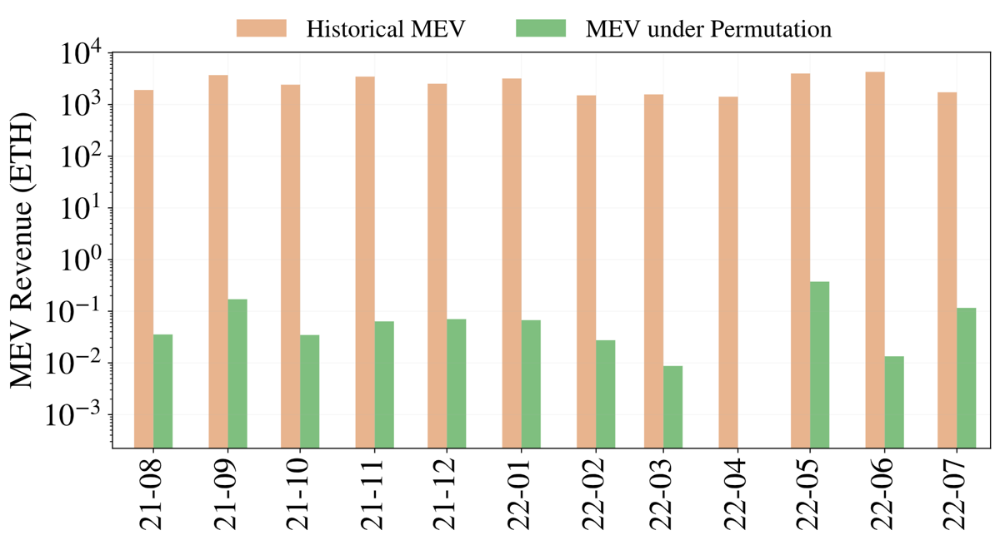
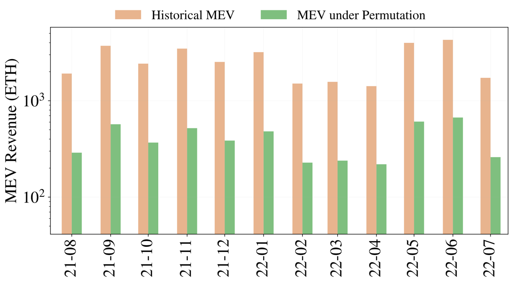
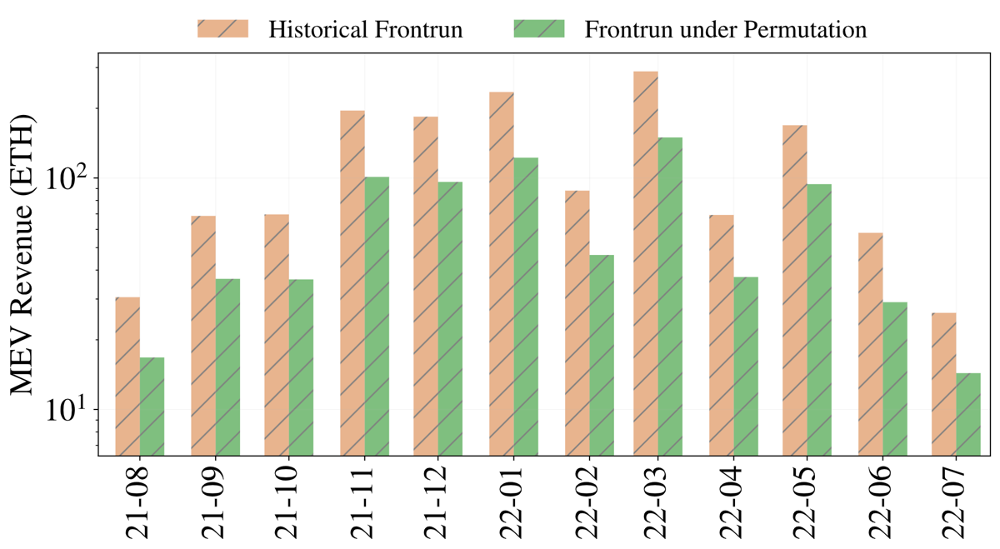
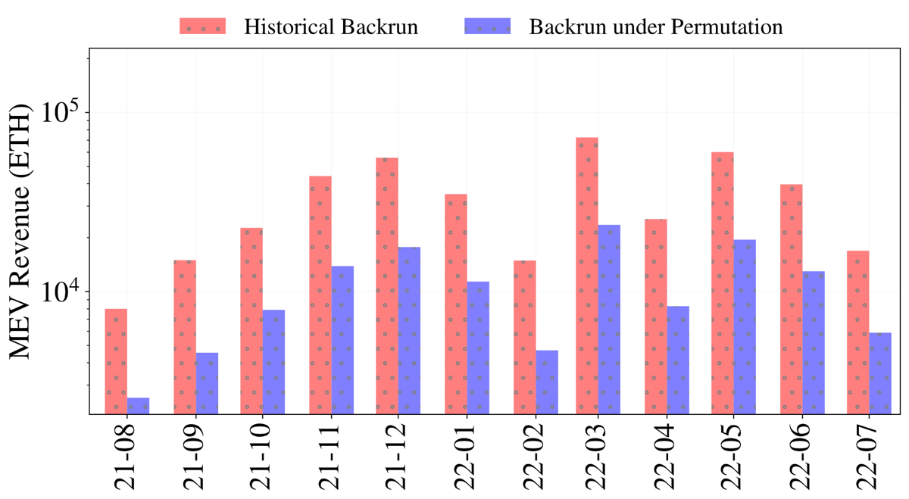
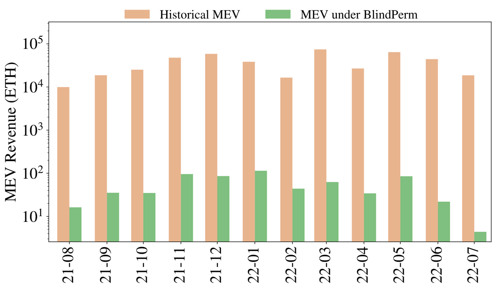

An encrypted mempool hides what a transaction says until it is committed. BlindPerm then randomly shuffles where each transaction lands, using a seed nobody can predict before the commit. With users contributing that seed, the shuffle costs essentially nothing beyond the encrypted mempool itself.
1University College London · 2Visa Research, Palo Alto · 3Mysten Labs, London
In three numbers
The authors replayed Ethereum blocks from August 2021 to July 2022, found sandwich attacks and arbitrage with the heuristics of Qin et al., and measured how much of that revenue would have survived a random permutation of each block. Each run was repeated 10 times with independent random seeds and the results averaged.
left after permuting each block, down from 31,749.59 ETH historically. The paper calls this “almost a complete mitigation.”
left even when a sandwich still pays with other transactions between its legs. The paper puts this at “almost 85%” mitigation.
left under BlindPerm, down from 443,866.13 ETH historically (Figure 4 of the paper).
The problem
Maximal extractable value (MEV) is the profit a block producer or searcher can make by including, excluding or reordering transactions. The usual defence is an encrypted mempool: transactions stay encrypted until the block is committed, so nobody can front-run what they cannot read. The paper points out two gaps.
The block producer still picks the order. A front-running arbitrage does not need to read anyone’s transaction; it only needs the latest chain state and the top slot of the block. Picture a popular NFT drop: the producer puts its own purchase first, whatever everyone else’s transactions say.
Metadata leaks. An encrypted transaction still reveals its submission time and sender address, and that can be enough to aim a sandwich at it.
The observation behind BlindPerm: blind ordering works because it makes the final order independent of the contents. A random permutation of the committed block also makes the final order independent of the committed order, and so of whatever order the producer chose. Figure 1 of the paper shows the three strategies that make the most money in practice.
Redrawn after Figure 1. Hatched = the attacker’s transaction, dashed = the (potential) victim that creates the opportunity.
Interactive · §3 of the paper
A sandwich needs three transactions in one exact order: the attacker’s buy, the victim, the attacker’s sell. Shuffle the committed block and the attacker loses control of that order. Sometimes the sandwich survives. Sometimes the sell runs before the buy and the attacker takes a loss. In the paper’s words, a shuffle can “turn a definite profit into a possible loss.”
Each shuffle runs the paper’s Permute (Appendix A: Fisher–Yates driven by Knuth–Yao sampling) on a fresh random seed. The counts are tallied live in your browser; they are not results from the paper.
Interactive · §3.1, §4.1, §4.2 and §5 of the paper
All three variants run on a BFT committee of $n \ge 3f+1$ validators, at most $f$ of them corrupt. The key idea: the seed that drives the shuffle is computed only after the block is committed, so the leader has already fixed the block by the time the randomness exists. Pick a variant, step through it, then break it.
Interactive · §4.2 and Appendix A of the paper
In the users’-seed construction, each user encrypts under a fresh symmetric tx-key and secret-shares that key to the validators with PVSS. Once the block is committed, the validators reconstruct every key to decrypt, and the seed is simply $\text{seed}_r = \text{tx-key}_1 \oplus \dots \oplus \text{tx-key}_k$. No extra signature and no extra round. And a single honest, non-colluding key makes the seed uniformly random.
Keys are cut to 32 bits so they fit on screen; real ones are full-length symmetric keys. The permutation reads its random bits from SHA-256(seed ‖ counter), a stand-in for the PRG in the paper’s footnote 4.
Permute$(\text{seed}_r, B_r)$Algorithm 1, Appendix A: for $i = \ell$ down to 2, draw $j$ uniformly from $\{1,\dots,i\}$ with Knuth–Yao, then swap $a_i$ and $a_j$.
Interactive · the paper’s §6 cost model
The simulation doesn’t just count wins and losses. When an attack might still pay after the shuffle, it weights the attack by a probability that depends on where the key transactions sit and on the block size $|B|$. The paper observed an average of 231 transactions per block, with a minimum of 3 and a maximum of 1386. The block-size control snaps to those three values.
Interactive · totals stated in §6 of the paper
Every bar below is a total stated in the text of §6, covering August 2021 to July 2022. The permutation rows shuffle blocks whose contents were public. The last row is BlindPerm: an encrypted mempool plus the permutation. On a linear scale, back-running arbitrage dwarfs everything else.
The paper does not compare encryption alone with BlindPerm, because the permutation adds almost nothing to the cost of an encrypted mempool. So there is no “encryption only” bar.
Guarantees
From the paper: “transaction permutation shifts sandwich attacks from being riskless to being risky, and transaction blinding shifts censorship from being optional to being all-or-nothing.” Each cell below paraphrases what the paper says about that combination.
| Threat | Encryption only | Permutation only | BlindPerm |
|---|---|---|---|
| Producer takes the top slot (front-running arbitrage) | ✗open needs only the latest state (§3) |
◐reduced 1,483.18 → 780.74 ETH |
◐reduced permutation layer |
| Sandwich attacks | ◐mitigated content-dependent (§6); metadata may still leak |
◐made risky 31,749.59 → 1.74 ETH (perfect) |
✓both layers |
| Back-running a visible trade | ◐mitigated content-dependent (§6); metadata may still leak |
◐reduced 410,112.07 → 133,613.02 ETH |
✓both layers |
| Metadata leakage (timing, address) | ✗leaks | –contents public anyway | ◐role reduced shuffle limits what a leak buys |
| Censoring, dependent transactions, mempool spam | ✓mitigated | ✗not enough shuffle loses effect (§4) |
✓all-or-nothing |
| Producer fills the block with its own tx, or includes only one | ✗ | ✗ | ✗limitation producer gives up a large portion of its fees (§1) |
| Property | Warm-up (Lemma 1) | BlindPerm (Lemma 2) | Why |
|---|---|---|---|
| Every honest validator applies the same permutation | ✓ | ✓ | BFT finality, plus a unique threshold BLS signature or the same recovered keys |
| Seed unpredictable to the leader before commit | ✓ | ✓ | the seed needs $2f+1$ contributions made after the commit |
| Seed unbiasable | ✓ | ✓ | at most $f$ faulty validators; in the users’ variant, one non-colluding user makes it uniform |
| Contents hidden until committed | ✗ | ✓ | threshold encryption, or PVSS-shared tx-key |
| Guaranteed decryption after commit | – | ✓ | the decryption threshold equals the consensus threshold |
| Corruption threshold | f < n/3 | f < n/3 | partial synchrony, optimal resilience |
| Extra work to get the seed | one threshold signature per view | validators’ variant: one threshold signature; users’ variant: essentially none | XOR of keys already recovered for decryption |
Measured
A local simulation on Ethereum data crawled through an Erigon archive node, from August 2021 to July 2022. No transactions were broadcast. Real MEV extractors might adapt to the new mechanism, which could change the numbers.
| Strategy | Figure | Historical (ETH) | After (ETH) | Paper’s wording | Reduction, computed |
|---|
“Reduction, computed” is $1 - \text{after}/\text{historical}$, calculated on this page from the paper’s two totals. It is not a number stated in the paper.
Provenance notes
The BlindPerm baseline does not equal the sum of its parts. The paper’s historical total for Figure 4 (arbitrage and sandwich attacks) is 443,866.13 ETH. Adding the three historical totals it reports separately (sandwich 31,749.59 + front-running arbitrage 1,483.18 + back-running arbitrage 410,112.07) gives 443,344.84 ETH, which is 521.29 ETH less. Both numbers appear here exactly as the paper states them. The paper does not explain the gap.
“Almost 50%” is 47.36%. For front-running arbitrage, 780.74 of 1,483.18 ETH remains, a 47.36% reduction. The paper describes this as “almost 50%,” in line with the expectation that a lone extractor’s chance is roughly halved.
Monthly values. The monthly bars below are the paper’s own figures, pixel-identical to the images in the linked PDF. The underlying monthly values were not released as data, so this page charts only the totals stated in the text. All five figures use a log-scale y-axis.





Beyond BFT committees
Layer-2 rollups often have one sequencer instead of a committee. The sequencer commits to its ciphertexts $S = (c_1,\dots,c_n)$ as a Merkle root, then must publish a permuted order anyone can check. Appendix C sketches two ways:
A: deterministic shuffle. After the commitment, public randomness $R$ is revealed. $\pi = \texttt{Permute}(R, n)$ fixes the order, and anyone can verify it against the root with Merkle proofs. Only hashes are involved.
B: zero-knowledge shuffle. The sequencer re-encrypts and permutes the ciphertexts, and proves with a SNARK that the mapping is a bijection over correct re-encryptions. The ciphertexts become unlinkable, and verification time does not depend on $n$.
In proof-of-work, the seed can be the winning nonce together with the transactions’ Merkle root. A miner who reorders the block after seeing the seed has to solve the puzzle again.
A producer can still sidestep the shuffle by including only one transaction, or by flooding the block with its own. Either way it gives up a large portion of its transaction fees, though its MEV revenue can still be higher. The threshold setup is also a hurdle when many parties join and leave; silent-setup threshold schemes are one direction the paper points to.
Reference
@inproceedings{kavousi2025blindperm,
title = {{BlindPerm}: Efficient {MEV} Mitigation with an Encrypted
Mempool and Permutation},
author = {Kavousi, Alireza and Le, Duc V. and Jovanovic, Philipp and
Danezis, George},
booktitle = {29th International Conference on Principles of Distributed
Systems (OPODIS 2025)},
editor = {Arusoaie, Andrei and Onica, Emanuel and Spear, Michael and
Tucci-Piergiovanni, Sara},
series = {Leibniz International Proceedings in Informatics (LIPIcs)},
volume = {361},
pages = {36:1--36:21},
publisher = {Schloss Dagstuhl -- Leibniz-Zentrum f{\"u}r Informatik},
year = {2025},
doi = {10.4230/LIPIcs.OPODIS.2025.36}
}
Code and data. The paper does not release code or simulation data. It says only that the Ethereum data was crawled through an Erigon archive node, and that sandwich and arbitrage detection follows the heuristics of Qin et al. (reproduced in its Appendix B).